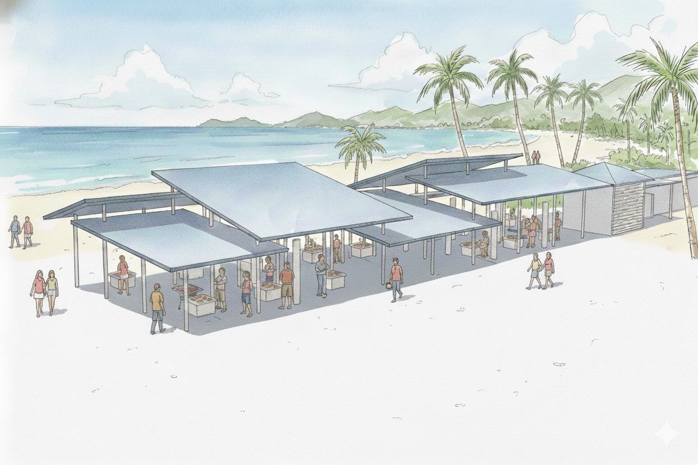
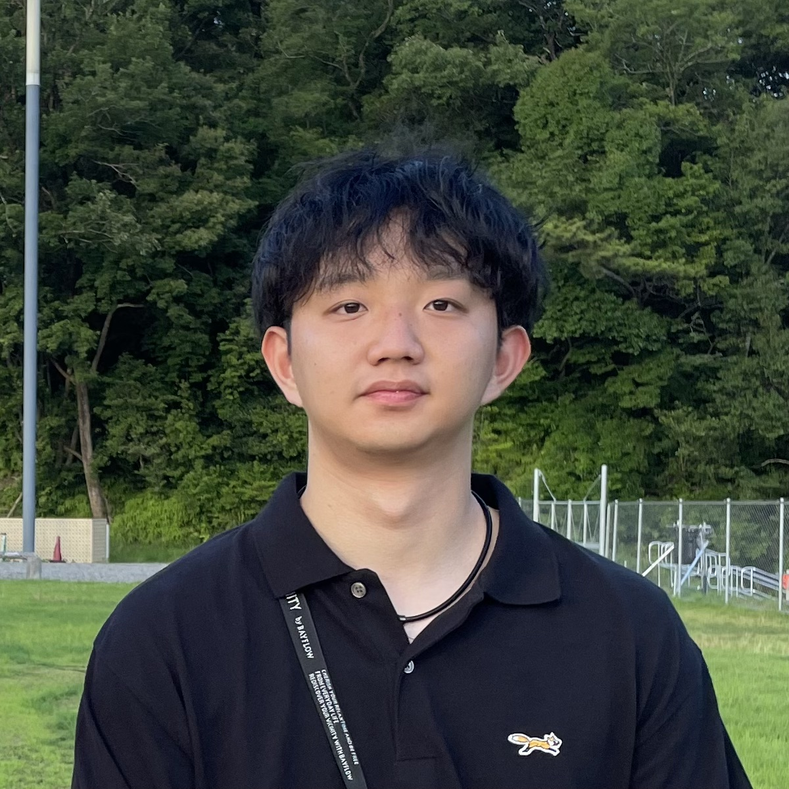
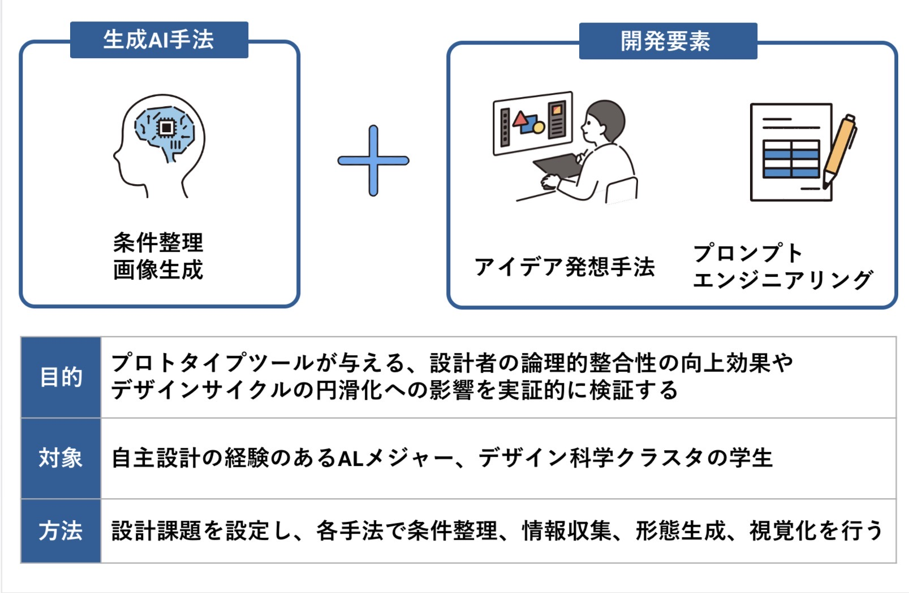
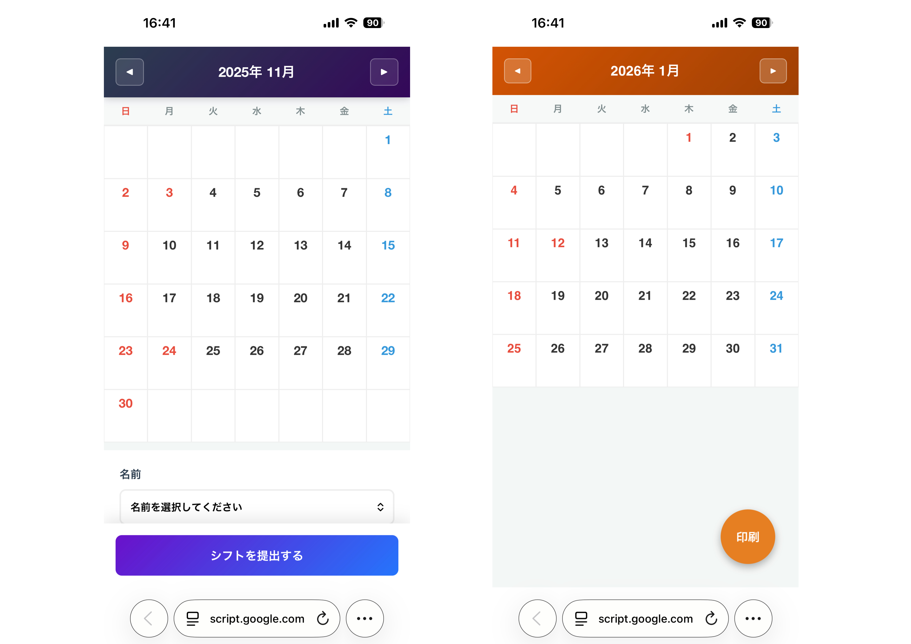
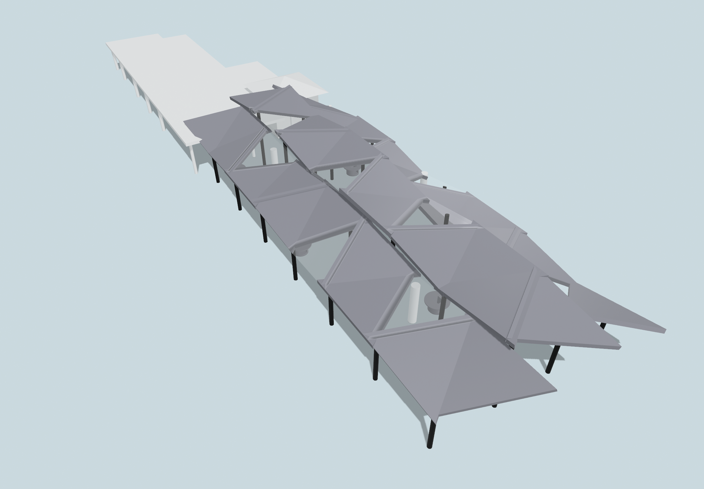

01デジタル技術による設計プロセスの効率化とBBQ場の竣工
建築プロセスの高速化と実建築の現実化
VIEW CASE STUDY建築デザインと情報工学を横断し、AIとアプリケーション開発で「建築のデジタル化・最適化」を研究・実践しています。

Yuta Kaito
和歌山大学大学院 システム工学研究科
デザイン科学専攻
「空間設計」と「DX推進」
建築デザインの経験を持ちながら、建築情報学・情報工学を学び、AIやアプリケーション開発を組み合わせた「建築のデジタル化・最適化」を研究・実践しています。空間をつくるだけでなく、テクノロジーを用いて「つくるプロセスそのものを豊かに効率化する」ことを目指しています。
文理科にて高度な基礎学力と論理的・科学的思考力を養い、実空間の創造への深い関心を持つきっかけを得る。
独自のダブルメジャー制度により建築と環境のデザインを主として学び、建築設計を学ぶ傍ら、デジタル技術の建築への応用に興味を持つ。
空間デザイン研究室に所属し、建築とDXをテーマとしアイデア発想における生成AIの活用について研究中。
Architectural and Technology Projects

01建築プロセスの高速化と実建築の現実化
VIEW CASE STUDY
02人間とAIが共創する「着想支援の設計」
VIEW CASE STUDY
03個人飲食店向けデジタルシフト管理＆業務プロセスの変革
VIEW CASE STUDYソフトバンク生成AIアイデアコンテスト 45,000件中第84位
VIEW CASE STUDY